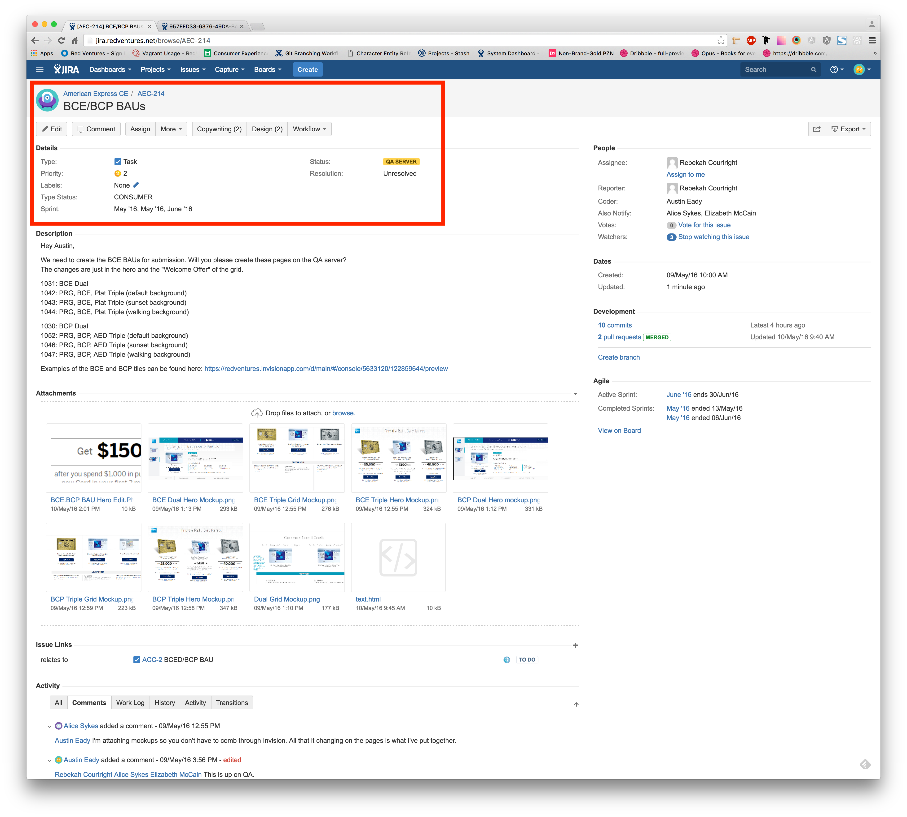
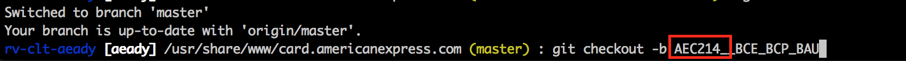

What's In a Landing Page
An afternoon with Ed and Austin.
FrontEnd Tech
The Languages
HTML • CSS • JavaScript • PHP
HTML
HTML is the standard markup language read by Web browsers
to render pages on the internet.
CSS
CSS is used for describing the look and formatting
of a document written in HTML.
JavaScript
JavaScript runs in the browser, which programs how web pages behave.
PHP
PHP is a server-side language used to manage our templating, logic, and dynamically generated content. The core of the RV Landing Page system is built on PHP.

RV Landing Page
RV Landing Page System (RVLP)
RVLP is a complex file finder. When a landing page is being processed, RVLP checks against a set of files to determine what content needs to be pulled in and overrides them if necessary.
This allows us to easily control tests on the landing page level.
How it Works
Benefits of RVLP

Version Control Systems
What Do These Systems Do for Developers?
- Allow developers to work on similar pieces of a project without over-writing each other.
- Gives us the ability to track even the smallest changes to a project over time.
- Provides a way to easily revert back to a previous working version if a new version breaks.
- Adds a level of security by restricting access to top level branches and by keeping an ongoing record of activity for each developer.
Local and Remote Environments

- For every developer, there are two versions of a project:
- The Developer's Computer:
- the local version with files you can edit,
save, add, and delete
- the local version with files you can edit,
- The Server:
- the remote version that recieves all changes
Now for a real-world overview
It all starts with a task



- C23 - Receive task to fix Blue APR, create
new branch - C24 - Complete task, save changes, and update QA
- C27 - QA now shows both BAU and APR
- C25 - Phase 1 - Deploy-Prep
Change links to re-direct traffic


- C25 - Preprod is updated for pre-deploy QA
- C28 - PS is set to turn off blue and traffic
is being redirected, so preAPR goes live
- C29 - Make deploy branch for preparation
- C30 - Update branch with features being deployed
(In this case only blueAPR) - Submit pull request to preprod
- Pull requests send up the necessary changes for
a senior to reivew before updating
a high level branch
- C31 - Justin or Ed have reviewed the pull request
and updated preprod - C31 - Preprod has gone through QA and Justin
has updated the master version making
it live